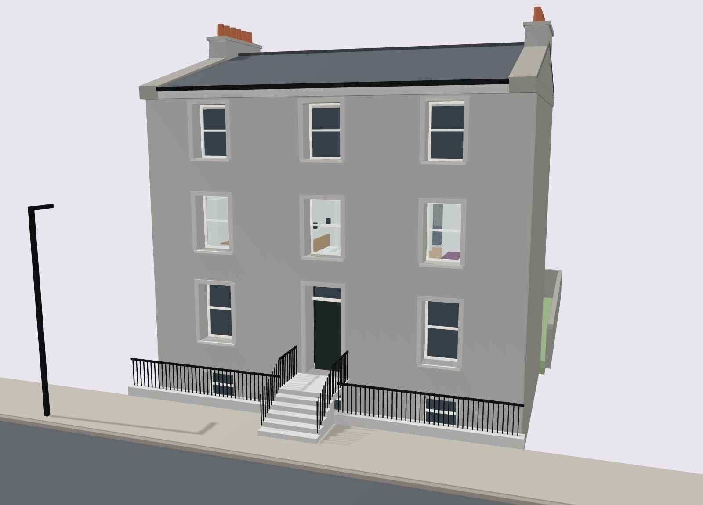
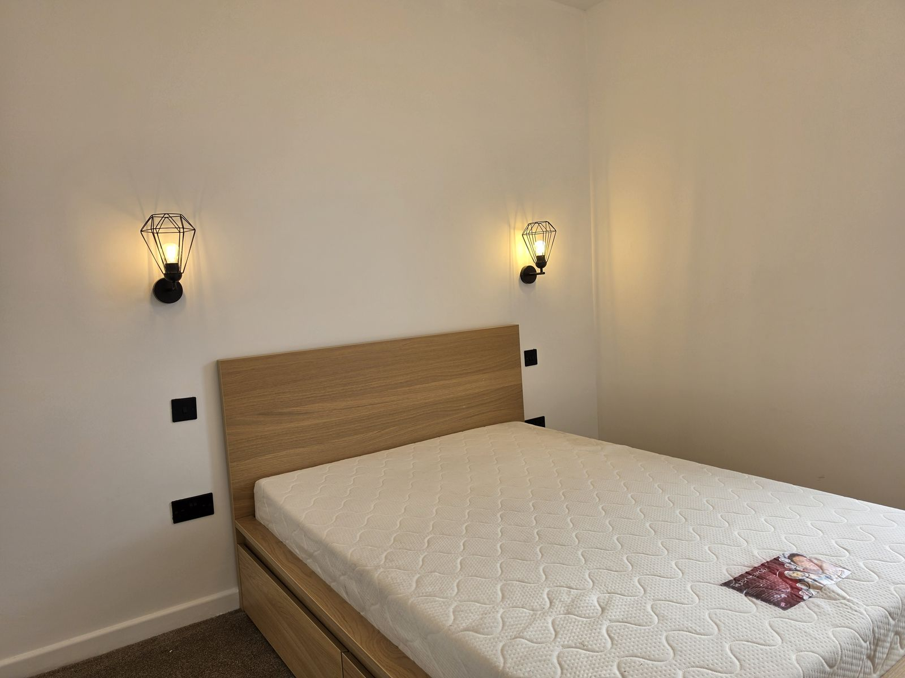
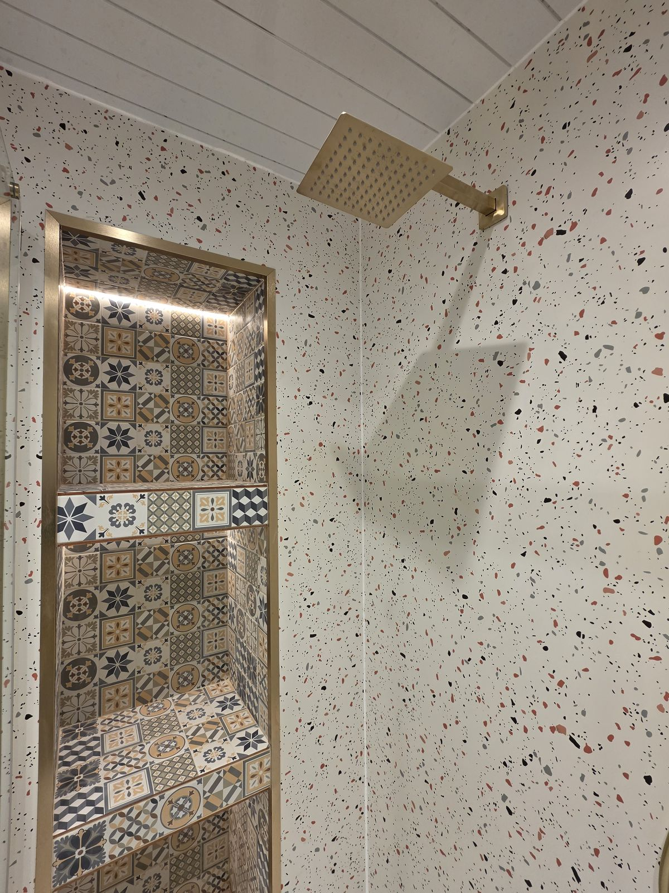
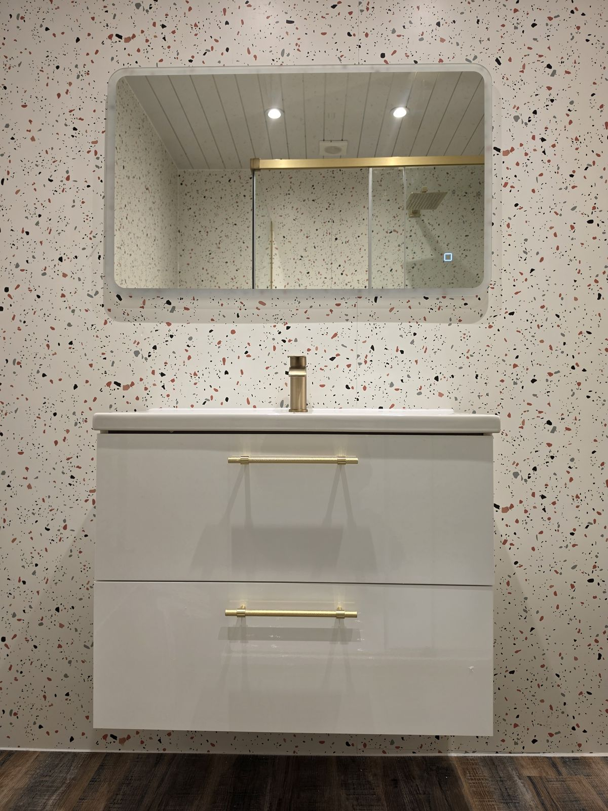
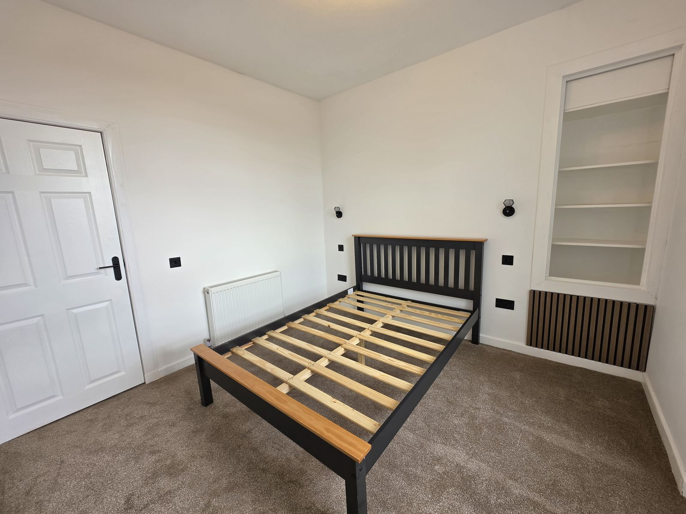
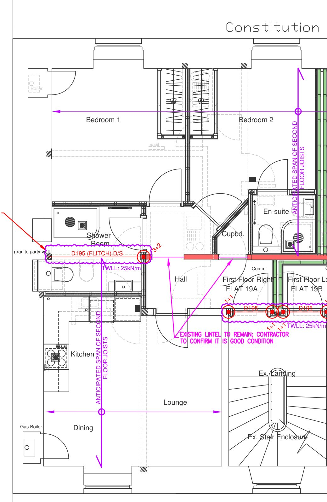
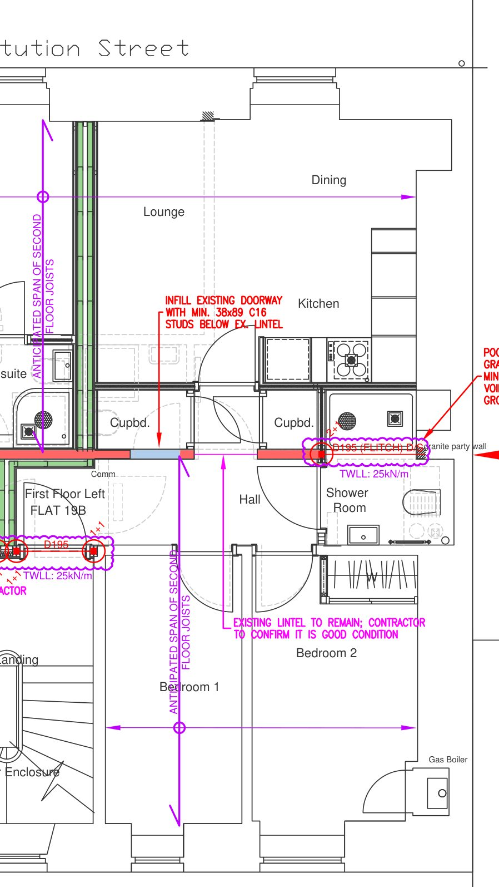

Fame Living · Investor pack · November 2026
Two finished two-bedroom flats on the first floor of 19 Constitution Street, Aberdeen AB24 5EU. Ready now. Prices on request.

3D model built from Fairhurst's structural drawings (401918/OM1–OM2, March 2026).
| Flat | Position | m² (approx.) | Bathrooms | Outlook | Price | Est. rent |
|---|---|---|---|---|---|---|
| 19A | First floor right | 50.5 | Shower room and en-suite | Bedrooms to the street, living room to the garden | On request | £850 |
| 19B | First floor left | 43.0 | Shower room | Living room to the street, bedrooms to the garden | On request | £795 |
| Both | 93.5 | On request | £1,645 |
Areas measured from the traced structural plan, which is not to scale; confirm with the home report. Rents are estimates from the Citylets Q3 2026 Aberdeen two-bedroom average (£813 a month), adjusted for size and en-suite; not guaranteed. Not financial advice.
| Status | Finished; available now |
| Process | Viewing, formal offer through your solicitor, conclusion of missives, date of entry |
| Tax | LBTT 0% to £145,000, 2% to £250,000; ADS 8% on additional homes (Revenue Scotland) |
| Structural design and building warrant (Fairhurst for LAS Architecture) | March 2026 |
| Works complete | September 2026 |
| On sale | Now |
Photographed on site, September 2026.




Oak beds, grey carpet and black cage wall lights; walk-in rainfall showers with brass-framed screens, terrazzo-effect panels, brushed-brass fittings, smart WC and LED mirror.
2 bedrooms · about 50.5 m² · Shower room and en-suite · Est. rent £850 a month

Structural first-floor plan (Fairhurst, 401918/OM1), as drawn with Constitution Street at the top. Not to scale.
2 bedrooms · about 43 m² · Shower room · Est. rent £795 a month

Structural first-floor plan (Fairhurst, 401918/OM1), as drawn with Constitution Street at the top. Not to scale.
Fame Living · info@fameliving.com · +44 (0)1224 011770
Plans and 3D are indicative and do not form part of any contract.